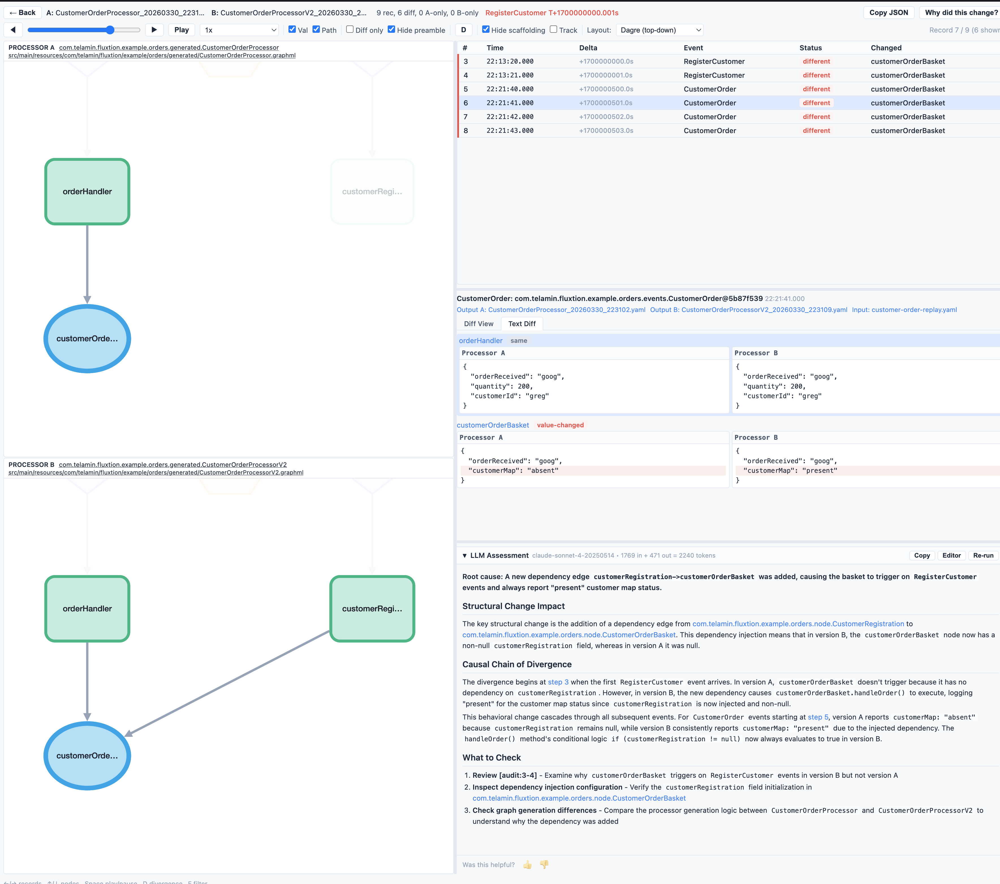

COMPILED GOVERNANCE FOR AUTONOMOUS AI · GRANTED US PATENT · LIVE IN PRODUCTION · MOD / NATO PIPELINE
A deterministic execution layer for AI systems in environments where correctness matters.
Telamin is the system that audits, validates, and governs how AI systems change.
ATOMIC GOVERNANCE AT INFERENCE SPEED
(A) AI-designed behaviour graph
(B) Compiled execution kernel
AI systems are evolving rapidly into autonomous agents but remain fundamentally unpredictable, computationally expensive, and difficult for enterprises to trust.
Current models rely strictly on trial-and-error methodologies, making resulting outcomes inconsistent, unrepeatable, and impossible to formally verify.
Enterprises cannot safely deploy these unpredictable systems in mission-critical environments where correctness, safety, and strict compliance are required.
"IDC predicts 60% of AI failures by 2026 will stem from governance gaps, not model performance."
AI is entering systems where failure is not acceptable — current infrastructure cannot support that.
A closed loop where only validated behaviour runs, and every execution makes the next one better.
Every stage is measured. Every measurement feeds the next decision. Telamin replaces runtime trial-and-error with compiled, proven, governed behaviour.
| Platform | Pre-Execution | Deterministic | Audit & Replay | Agentic Support | Data Privacy | Key Limitation |
|---|---|---|---|---|---|---|
| Apache Flink | No | No | Event Sourced | No | Self-Hosted | High latency, JVM GC pauses |
| LangChain / CrewAI | No | No | Logs / Traces | Yes | Varies (Cloud) | Probabilistic, slow execution |
| Temporal | No | Partial | Durable Events | Not AI-Aware | Varies (Cloud) | Workflow orchestration, not AI governance |
| Akka | No | No | Actor Traces | Yes | Self-Hosted | Non-deterministic actor scheduling |
| Custom In-House | Partial | Partial | Custom Build | Manual | Full | Massive R&D & maintenance |
| Telamin (Fluxtion) | Yes | Yes (40-90ns) | Atomic | Native | Absolute (On-Prem) | Requires compilation step |
Resolved Execution: Unlike traditional runtime monitors, behaviour is resolved into a fixed, immutable execution path prior to deployment.
Atomic Safety: Business logic, continuous measurement, and safety constraints are deeply compiled into a single atomic execution gate, ensuring zero performance tax.
The system does not decide what to do at runtime — it already knows.

Market-Proven: Successfully deployed in a live crypto market-making system for over two years with zero manual runtime intervention. Expanded to a second enterprise customer: Paid POC Carbon Capture.
Current Traction: ~$110K ARR
In production: sub-microsecond decisions, zero GC pauses, zero manual intervention across 2+ years of live trading.
Zero Runtime Dependency: Generated code is standard Java. No proprietary runtime dependency on Fluxtion is required post-compilation.
Demonstrated to a defence-AI supplier whose lead sits on the MOD AI Ethics Committee. Telamin reproduced in 5 days what had taken their team 6 man-months. Three days later: a low-six-figure equity offer in the defence venture.
Wrote to QinetiQ advising they prototype with the Telamin stack.
"Years in front of where we are aiming." Invited to apply against specific challenge sets.
Head of ADS brokered NATO AI-specialist meeting; European trade mission; UK Defence Innovation referral — "should be closely reviewed for revolutionising UK defence supply chain."
Counsel view: Kilburn & Strode — one of the UK's top AI patent practices — prosecuting the extensions. Their assessment: "interesting and very novel work."
HFT, Defence, and high-stakes Enterprise.
B2B SaaS capturing recurring value across build, governance, and execution.
Non-negotiable infrastructure for regulated AI deployment.
A New Category at the Intersection of Four Growing Markets
| Market Segment | 2026 TAM | 2030 TAM | Strategic Driver |
|---|---|---|---|
| Complex Event Processing | ~$8.0B | ~$19B | 24% CAGR. Real-time decisioning in HFT, FinTech, IoT. Mordor Intelligence |
| AI Agent Orchestration (full market) |
~$8.5B | ~$45B | 40% of enterprise apps embed agents by 2026. Deloitte TMT 2026; Gartner |
|
→ Governance subset
(subset of AI Agent Orchestration, not additive) |
~$3–4B | ~$15–20B | 60% of AI failures stem from governance gaps. Governance is the dominant wedge. IDC; Telamin estimate |
| Regulated Compliance (real-time, runtime) |
~$2.0B | ~$6.0B |
Deterministic audit mandates: MiFID II, EU AI Act, DO-178C.
ACTIVE ENGAGEMENT: MOD · QINETIQ · RAF · NATO Industry estimates |
|
Regulated Agentic Behaviour
NEW CATEGORY
|
~$1–2B Telamin est. |
~$8–15B Telamin est. |
The layer Telamin is creating. Governance of agentic AI in regulated environments. No incumbent. Telamin category estimate |
| Platform expansion (marketplace/cloud) |
— | ~$9.0B | Multi-target compilation, managed cloud network effects. Telamin platform roadmap |
| Total addressable (2030, platform view) | ~$50B+ |
Direct comparable: Acin (AI operational risk for financial services) acquired May 2025 by Cube (Hg portfolio). Founder Paul Ford now a Telamin advisor. A 2025 category exit — not a decade-old proxy.
* "Regulated Agentic Behaviour" is a net-new category. No incumbent vendor sizes it yet. Telamin is positioned to define both the category and the measurement.
Telamin is uniquely positioned to become the definitive operating system that strictly determines what AI behaviour is valid, what actually works, and what is allowed to run.
Explorer + DSL Analyst
Establish core foundation and secure early adopters.
TARGET: 3-5 CUST, $300K+ ARR
Solo Pro + Growth
MOD / RAF paid POC conversion; scalable automated governance tooling.
TARGET: $500K+ ARR
Institutional Rollout
Private cloud & mission-critical sovereign deployments.
TARGET: $1M+ ARR
Marketplace Standard
Third-party behaviour marketplace. Managed execution. Multi-target compilation network.
TARGET: $5M+ ARR · CATEGORY OWNERSHIP
Co-founded and ran Edge Capital Investments (HFT). Repeat founder with architect-level JVM expertise. Built and maintained the core Fluxtion system in live, high-frequency production environments to harden it against extreme market volatility.
Granted US patent: US11074079B2. Three pending applications covering the AI-deterministic interface. No competing filings identified. This creates a massive defensibility moat.
Prosecuted by Kilburn & Strode — top UK AI patent practice: "interesting and very novel work."
Founder / CEO, Aurrerra
Previously founder & CEO of Acin — AI operational risk for financial services. Acquired May 2025 by Cube (Hg portfolio). A direct category comparable for Telamin. Advises on: regulated-enterprise GTM, category-creation playbook.
Co-Founder / Former CEO, PharmaReview
Co-founded and scaled PharmaReview to global leader in pharma copy review with 8 of the top 20 pharma companies as clients. Exited to IQVIA. Regulated B2B GTM depth. Advises on: enterprise sales motion, compliance-driven procurement.
Senior compiler & platform engineers — incl. 1 principal/staff level (compiler co-owner)
DevRel / developer-led growth lead
Enterprise sales (HFT & sovereign accounts)
Series A Target (24+ Mos Runway): $2M+ ARR with multiple institutional deployments.
Valuation evidence: Low-seven-figure acquisition offer (carbon-capture POC client) · Mid-six-figure offer (crypto market-maker, post-bake-off) · Granted US patent (US11074079B2) + 3 pending · Active MOD / QinetiQ / RAF / NATO pipeline · 2025 category comparable: Acin → Cube (Hg portfolio).
Supporting material for technical and commercial diligence. The main deck carries the thesis; the following five slides defend it.
Traditional event-driven systems — reactive frameworks, stream processors, workflow engines — require developers to define execution pipelines, scheduling, and coordination explicitly, through a DSL, a reactive topology, or a workflow specification. Telamin derives all of it from the application's object graph at compile time. No runtime routing. No orchestration layer. No coordination DSL.
Execution inference requires a closed-world assumption — the dependency graph must be fully known at compile time. That bounded scope is what unlocks four properties that matter to the target market: deterministic execution, zero allocation in the steady state, microsecond-predictable latency, and a reproducible audit trace of every decision.
Safety-critical, real-time, audit-bound systems that operate under closed-world constraints by necessity:
Open-world, dynamically-evolving systems:
The class of systems where the trade is right — HFT, defence, autonomy, regulated enterprise — is the target.
Elementum AI has raised ~$75M at a reported ~$220M valuation to address the non-determinism of LLM-based agents — with an orchestration layer that routes work around probabilistic execution. Telamin solves the same problem one level deeper: we compile the behaviour itself into a mathematically verifiable deterministic graph.
| Dimension | Elementum (orchestration layer) | Telamin (compiled execution) |
|---|---|---|
| Architectural layer | Rule-based orchestration over probabilistic agents | Ahead-of-time compilation into a deterministic kernel |
| Token cost at runtime | Ongoing — scales with transaction volume | Zero — tokens consumed only on compile / iterate cycles |
| Determinism source | Routing rules that bypass the LLM where possible | Verifiable IR with proven execution semantics |
| Audit surface | Orchestration logs + agent traces | Reproducible execution trace of the compiled graph |
| Data privacy at runtime | CloudLink into Snowflake / Databricks in client env | Compiled code runs in client env with zero runtime dependency |
| Re-design cost | Re-prompt / re-orchestrate (tokens + retraining cycles) | Re-compile via toolset (bounded, auditable, priced at compile step) |
Elementum's raise validates buyer demand. Telamin wins on unit economics (no runtime token burn), depth of guarantee (compile-time, not orchestration-time), and audit surface (reproducible trace, not LLM log archaeology).
Telamin is a single architecture with two entry points into the same compiler and execution kernel.
Validation & governance
BUYER: Regulated enterprise
BUDGET: Compliance, AI governance, risk
CUSTOMERS: Banks, regulated finance, defence primes
Deterministic autonomous execution
BUYER: Autonomous-systems programmes
BUDGET: Autonomy, real-time, mission-critical software
CUSTOMERS: Defence, robotics, edge AI
Same land-and-expand physics Palantir used to grow from compliance-adjacent analytics into the dominant defence platform, and Databricks used to grow from a governed data tool into the full AI/ML platform contract. Control Plane is the enterprise wedge; Runtime is the expansion surface.
Two mechanisms operate inside the deterministic envelope.
The compiled graph contains multiple valid execution paths. Runtime selection among them is driven by signal accumulated from deployed behaviour — which path performed best under which conditions. The space of possible executions is bounded at compile time; the selection within that space adapts as the system learns in the field. Learning at the graph-topology level, not the model level.
Machine-learning and Liquid Neural Network (LNN) models can be embedded inside the deterministic graph as first-class nodes. Their input boundaries, output contracts, versioning, and update semantics are type-checked and audit-traced — learning operates under the same governance envelope as every other node.
Determinism is defined precisely: given the same input event stream and the same learned state, the system produces the same output trace, every time. When learned state updates — a new path weighting, a new model version — the change is versioned, audit-traced, and reproducible. Identical state + identical input → identical output, always.
The trade-off that defeats most "governed AI" architectures — "you can have AI that learns, or AI that is auditable, not both" — does not apply here.